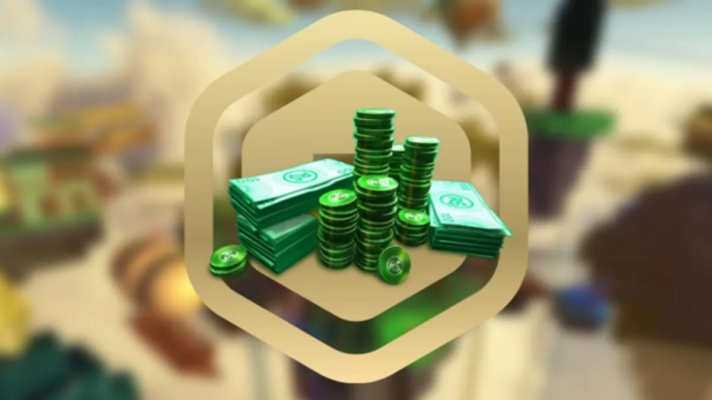

Items and Currency
Roblox allows players to buy, sell, and create virtual items which can be used to decorate their virtual character that serves as their avatar on the platform. Clothes can be bought by anyone, but only players with a Premium membership can sell them. Only Roblox administrators can sell accessories, body parts, gear, and packages under the official Roblox user account; virtual hats and accessories can also be published by a select few users with past experience working with Roblox Corporation. Several individuals design items as a full-time job, with the highest-earning creators making over $100,000 a year off item sales. Items with a limited edition status can only be traded between or sold by users with a Roblox Premium membership.
Robux allows players to buy various items, and are obtained by purchase with real currency, from a recurring stipend given to members with a Premium membership, and from other players by producing and selling virtual content in Roblox. Prior to 2016, Roblox had another currency, Tix (short for "Tickets"), that was discontinued in April of that year. Robux acquired through the sale of user-generated content can be exchanged into real-world currency through the website's Developer Exchange system. There are a sizable amount of scams relating to Robux, largely revolving around automated messages promoting scam websites, scam games designed to appear to give out free Robux, and invalid Robux codes.